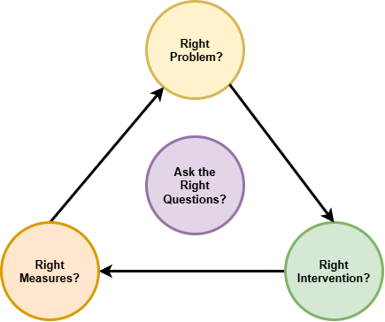

Why improvement programmes fail
Three questions to help you find the next useful step.
Start small. Learn. Repeat.
When improvement stalls, we may have misunderstood the problem, chosen an unsuitable or incomplete change, or misjudged the results.
You do not need a complete system map before beginning, but do need enough understanding of the relevant connections to act responsibly. Start with one important difficulty, consider its dependencies and wider effects, and use the result to improve your understanding.
Start wherever you are most uncertain. Move between the questions as you learn; they are not a rigid sequence.

One problem → one leverage point → one experiment → three measures → one decision
A leverage point is a condition where a change could make a useful difference. Treat it as a possibility to test—not a proven answer.
Throughout: What do we know, what are we assuming, and how could we check?
Right problem?
What is one important difficulty—and what might be producing it?
- Describe the gap. What should be happening, and what happens instead?
- Follow a real case. Where and when does progress become difficult? What does the next step depend on?
- Explore explanations. What conditions might explain it? What else could explain it?
- Check the evidence. What supports or contradicts each explanation? What would help us choose one promising place to begin?
Leave with: one clearly described problem and one explanation worth testing.
A plausible explanation is not an established cause. Investigate conditions before blaming people. Act on immediate risks; serious or irreversible harm may require specialist investigation before a test.
Help me understand the problem
Open only what helps with your current uncertainty. These are prompts, not a checklist to complete.
Understand enough of the wider system: consider the shared purpose, necessary dependencies and possible consequences elsewhere or later. If these cannot be understood adequately for the risk involved, investigate further before committing. A small local change is not automatically safe.
Where might the difficulty lie?
Choose the area that sounds familiar. These prompts support investigation; they are not diagnoses to assume or a checklist to complete.
1. How work flowsDemand, interruptions, dependencies, capacity and competing priorities.
- Dependencies and constraints: what must happen before work can move forward? Waiting for information, approval, another team or an external service can limit progress. Improving another step may not increase overall output now, though it may have other benefits. Does work depend on the boss making every sale or one expert having all the answers? Would it continue reliably if that person were unavailable—or demand doubled?
Explore constraints and bottlenecks → - Variation, demand and capacity: uneven arrivals, different types of work and changing capacity can create queues—even when averages appear balanced. Does the service have the capacity and flexibility to cope?
Explore variation, demand and capacity → - No capacity to improve: urgent work, rework and competing priorities can crowd out learning. Is recurring firefighting consuming the time needed to change the conditions producing it?
Make room to improve →
Protect time to test and develop alternatives → - Unhelpful boundaries: work is exposed to uncontrolled interruptions and changing demands. Useful boundaries protect focus without hiding dependencies or blocking cooperation.
- Avoidable work and failure demand: are chasing, corrections and repeat contacts consuming time, especially expert time? Investigate the earlier failure that generated the work. Necessary customer conversations, new needs and urgent safety concerns are not automatically failure demand.
Recognise and reduce failure demand → - Too many commitments, too little focus: are competing projects and requests preventing completion? Agree what should stop, wait or be renegotiated, rather than treating everything as a priority.
Choose priorities and protect focus →
2. How work is organised and supportedRoles, skills, cooperation, feedback, standards and assurance.
- Committing before testing the wider need: have we treated a few keen users’ requests as evidence that enough others need the same solution and will adopt or pay for it? Check who needs it, who decides, what alternatives exist and what evidence would justify further investment. For a public or internal service, test likely use, value and funding rather than assuming a commercial market.
Test the need beyond the first users → - Slow or incomplete feedback: people may not learn what happened after their decisions, or the information arrives too late to help. Do consequences reach the people who can act—including effects on customers and other teams?
Close the feedback loop → - Silos and local optimisation: teams can meet their own targets while shifting waiting, cost or risk elsewhere. Follow the work across boundaries and ask whether a local improvement helps the whole result.
Explore systems thinking and silos → - Missing standards: no clear, shared way to do routine work or handle exceptions.
- Unclear roles, authority or missing capabilities: does “quicker to do it myself” keep decisions with one person? Check expectations, skills, support and decision rights. Bring customer understanding and technical expertise together, rather than leaving them in separate silos. Capabilities may include market assessment, customer research, financial planning and technical skills.
Review roles and working arrangements → - Compliance replacing prevention: have documentation and audit results become substitutes for checking reliable delivery and actual outcomes? Meet applicable requirements, but also check what happens in everyday work.
Look beyond compliance to prevention →
3. Beliefs and assumptions shaping decisionsWhat feels necessary, impossible, too risky—or safe enough not to question.
Use familiar statements as starting points for questions—not labels for people.
- “If these users want it, there must be a market.” Are they representative of a reachable group—or unusually motivated users with different needs, budgets or support? What would show that others will commit, not just express interest?
- “We cannot afford to turn work away.” Are we accepting commitments we cannot deliver reliably? What do the cash position, sales pipeline and cost of servicing the work actually show?
- “It will never happen to us.” What evidence supports that confidence? Are near-misses, changing conditions or concerns being overlooked?
- “This is the only market or product we know.” Have alternatives been investigated—or ruled out because they are unfamiliar? Who outside the organisation could help test our assumptions?
Too busy to investigate alternatives? Agree what will stop or change to create a small amount of protected learning capacity. Give someone responsibility for testing one adjacent opportunity with prospective customers before committing substantial development effort. The key is not to escape the current business in one leap. It is to stop the current business consuming every opportunity to discover what could come next.
- “It is quicker or safer to keep doing it ourselves.” What would make delegation or another way of working feasible? What knowledge, capability or authority is genuinely missing?
A possible loop—not a diagnosis: “We must take every job” → too many different commitments → overloaded key people → little time to develop alternatives → continued dependence on taking every job. Is this happening here, and what evidence would help us check?
Fear of running out of money may reflect a real financial constraint, not a mistaken belief. Staying in an existing market may be sensible. Missing capabilities need practical support, not simply a change of attitude.
What are we treating as a fact, what are we assuming, and how could we safely find out?
Does a familiar response keep leaving the problem in place? Explore common improvement traps →
What are system conditions?
System conditions are the structural and environmental factors that shape behaviour and how a system performs. Five useful categories are:
- Measures: the targets, metrics and rewards that influence behaviour.
- Tools & technology: the IT systems, equipment and information available to do the work.
- Structure & roles: the hierarchy, functional silos and division of responsibilities.
- Processes & rules: the workflows, policies and regulations governing how work moves.
- Culture & leadership: management behaviour and the unspoken norms that shape the working environment.
These conditions strongly influence how people behave and what they can achieve. Lasting improvement often requires changing the conditions—not simply asking people to try harder.
Also check capacity and capability: the time, staffing, skills, resources and authority needed to do the work.
Look beneath the latest event: patterns and the iceberg
The iceberg model helps us look beneath the visible event or occurrence. Consider this illustrative example:
- Event: a customer’s order arrives late.
- Pattern: late deliveries recur near the end of each month.
- Structure: sales promises dates without checking capacity; orders pile up before the monthly target deadline.
- Mindset or belief: “We must promise the date the customer wants, or we’ll lose the sale.”
Is this a one-off—or has it happened, or nearly happened, before?
Patterns include trends, cycles and recurring issues. Make them visible by charting what happens over time. Then investigate how work is organised and question the assumptions behind it. Include outside influences, such as changing demand, funding or other services. In a real investigation, the explanation needs checking—not assuming.
Look beneath the visible symptoms →Sketch what has been happening over time →
Choose another perspective if useful
- Organise and check causes with evidence — build a branching explanation; do not force one root cause.
- Where does it work better—and what is different? — compare the conditions before copying a practice.
- Could a familiar improvement trap be involved? — use the examples as questions, not diagnoses.
Work backwards from the result needed: if we were designing afresh, what would have to be different? Compare this with current conditions, then check which differences actually matter. A gap from an ideal does not prove a cause.
Right intervention?
What is one bounded change that could help—or help us find out?
- Explain the connection. How should this step affect the difficulty? What should change first?
- Make it executable. Can the people involved carry it out? What must stop, wait or receive cover?
- Check dependencies and harm. What else must be in place? Who needs to cooperate or authorise it, and could it make things worse elsewhere?
- Limit the test. Where and for how long will it apply? How can we stop or adapt it?
Leave with: one experiment, an owner and a review date.
The next step might be an observation, comparison or conversation—not an operational change. Choose the smallest test capable of answering the question, not the smallest activity available. Some tests need coordinated action across teams. Set a deadline and a decision point; do not let a pilot drift indefinitely.
Help me design a workable change
Use this guidance when the proposed change needs a closer look. A deeper intervention is not automatically better; choose a change connected to a supported explanation.
Urgency has two tracks: contain the immediate consequences and investigate what keeps producing them. Restoring service is necessary, but does not establish that the recurring problem has been solved. A focused, time-bounded test can support prompt decisions; high-risk or tightly coupled changes may require a larger coordinated response and formal review.
Did we choose a level of intervention—or leverage point—that addresses those causes? Are we changing something that can make a difference?
- Level 1 — Fix the output: put the immediate problem right.
- Level 2 — Fix the process: improve how the work is done.
- Level 3 — Fix the system: change capacity, responsibilities, rules or working arrangements.
- Level 3 Deep — Reconsider beliefs and mindsets: question the assumptions holding the current system in place.
Will this change be enough? Check what else must be in place for it to help.
Check what else is needed →
Immediate fixes can be necessary. Deeper changes can be more politically and organisationally difficult because they challenge established responsibilities, interests and ways of working.
What can we change ourselves? Identify what needs cooperation or authority from elsewhere. Do not ignore a cause simply because it sits outside our control.
Involve the people doing the work in understanding the problem and designing the change—not just informing them afterwards.
Make the new way of working clear, simple and practical, with the time, resources and authority to use it.
Protect capacity to respond. If every available hour is committed, unexpected demand, longer jobs or rework can quickly create queues. Slack is not automatically waste: it helps absorb variation and recover from disruption.
Why keeping everyone busy can slow the system down
With variable arrivals and processing times, waiting can rise sharply as utilisation approaches full capacity. Around 80% utilisation can be a useful planning prompt, but there is no universal threshold or requirement for 20% slack everywhere.
Keep a deliberate margin where and when it is needed, with the right skills. Check waiting, completed work, quality, safety and staff workload—not utilisation alone.
Design capacity and slack for the work →Recognise psychological inertia—the pull of familiar habits and assumptions. Listen to concerns: people may also see real risks, extra workload or something they stand to lose. Do not assume every concern is resistance.
Understand what makes the change difficult. Involve those affected, address risks and losses, and agree what will stop or be covered so the change is workable—not simply additional work.
Practical help to make change workable →
Then check: did the intended change actually happen in everyday work?
Choose a fix deep enough to address the problem →Meet apparently conflicting needs through separation →
Right measures?
What should we observe, and what will we decide?
Start with three measurement questions:
- Response: is the part we intended to change responding? Agree what should change first and when.
- Outcome: is the result that matters improving?
- Harm: are we making anything else worse—or shifting work, delay or risk to someone else?
Also check that the intervention was actually used. Adoption alone is not improvement. Record your prediction before the test; do not redefine success afterwards.
Leave with: a prediction, a few measures and a review at which to decide whether to continue, adapt, stop or scale.
Three is a useful starting point, not a limit when risk requires more. Allow for variation and realistic delays. A chart can reveal change; it does not establish its cause. No detected change does not automatically mean no benefit. Scale only when evidence supports wider use.
Help me judge the result fairly
Agree beforehand what you expect to change, roughly by how much and when. Use the results to question that expectation and decide what to check next.
Follow the work to the next useful result. A shorter meeting is not an improvement if people then spend longer chasing missing information. Check whether the next person can act—and whether total effort or delay has fallen, rather than moved elsewhere.
Allow for variation. Nearly everything varies over time, making it hard to see the wood for the trees. Use run charts and, where suitable, step-change analysis to look for changes beyond routine—or common-cause—variation. Do not judge success or failure from a single result. The method must suit the data, including seasonal patterns and links between successive observations.
Allow sufficient time—it may take several years. Agree realistic timescales for implementation, effects and detection. While waiting, check expected earlier results and possible harm.
A chart reveals patterns, not their causes. No detected change does not automatically mean no benefit.
Choose measures that show whether the change helped →Understand variation before reacting to a result →
Interpret your StepChange chart →
One difficulty. One useful next step.
Bring one real difficulty. Choose the question you are most uncertain about and involve the people who can help.
Investigate enough to choose a responsible next step—not until every uncertainty has disappeared. Give that step an owner, a deadline and a clear question to answer.
The next step might be an observation, a conversation or a bounded change. Use what you learn to decide what to do next. Avoid both extremes: acting without thinking, and thinking without acting.
Keep the whole purpose in view. Understand the relevant connections. Limit commitment while uncertainty remains. Expand investigation or coordinate wider action when the evidence, risk or dependencies require it.